Sexo Frágil
Todos os episódios possuem redação final de João Falcão. A 2ª temporada foi reprisada fora de sua sequência original no 1º ciclo da reprise.
| EPISÓDIO | EXIBIÇÃO | REPRISE | |||
|---|---|---|---|---|---|
| 1ª TEMPORADA - ANO 1 - 2003 | |||||
| 001 | 1x01 | 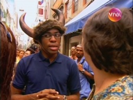 | "Já Não Somos os Mesmos" escrito por Cláudio Paiva, Guel Arraes e João Falcão direção João Falcão e Flávia Lacerda elenco convidado Thiago Fragoso e Zéu Britto |
17/10/2003 | 22/05/2010 |
| 002 | 1x02 | 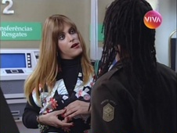 | "O Dia da Caça" escrito por André Laurentino e João Falcão direção João Falcão e Flávia Lacerda | 24/10/2003 | 29/05/2010 |
| 003 | 1x03 | 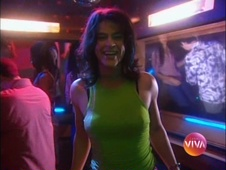 | "Almas Gêmeas" escrito por André Laurentino, Cláudio Paiva, Guel Arraes, João Falcão, Juca Filho, Mauro Wilson e Péricles Barros direção João Falcão e Flávia Lacerda elenco convidado Zéu Britto | 31/10/2003 | 05/06/2010 |
| 004 | 1x04 | 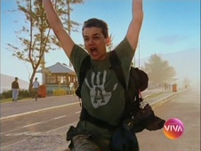 | "Vapor Barato" escrito por Adriana Falcão e João Falcão direção João Falcão e Flávia Lacerda |
07/11/2003 | 12/06/2010 |
| 005 | 1x05 | 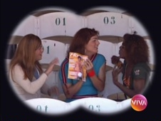 | "Hoje é Dia de Jogo" escrito por Marcelo Rubens Paiva direção João Falcão e Flávia Lacerda elenco convidado Dado Dolabella e Zéu Britto |
14/11/2003 | 19/06/2010 |
| 006 | 1x06 | 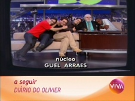 | "Minha Vida Não é um Sitcom" escrito por Cláudio Paiva e Mauro Wilson direção João Falcão e Flávia Lacerda |
21/11/2003 | 26/06/2010 |
| 007 | 1x07 | 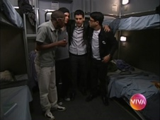 | "Quem Vai Ficar com Soraia?" escrito por André Laurentino e Antonio Prata direção João Falcão e Flávia Lacerda elenco convidado Thiago Fragoso e Zéu Britto |
28/11/2003 | 03/07/2010 |
| 008 | 1x08 | 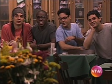 | "A Fonte da Juventude" escrito por Adriana Falcão e João Falcão inspirado na obra de Luis Fernando Veríssimo direção João Falcão e Flávia Lacerda elenco convidado Vladimir Brichta e Zéu Britto |
05/12/2003 | 10/07/2010 |
| 009 | 1x09 | "Para Que Serve um Homem?" escrito por André Laurentino, Antonio Prata, Mauro Wilson e João Falcão direção João Falcão e Flávia Lacerda elenco convidado Caio Junqueira e Zéu Britto |
12/12/2003 | 17/07/2010 | |
| 010 | 1x10 | 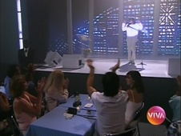 | "Direito de Resposta" escrito por Adriana Falcão e João Falcão direção João Falcão e Flávia Lacerda elenco convidado Aramis Trindade, Edmilson Barros e Zéu Britto |
19/12/2003 | 24/07/2010 |
| 2ª TEMPORADA - ANO 2 - 2004 | |||||
| 011 | 2x01 | 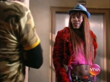 | "Um Programa Pequeno Demais Para Todos Nós" escrito por Adriana Falcão e João Falcão direção Flávia Lacerda |
04/06/2004 | 31/07/2010 |
| 012 | 2x02 | 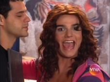 | "Encontros e Desencontros" escrito por André Muhle, Flávia Lacerda, Kiti Tassis e João Falcão direção Flávia Lacerda elenco convidado Vladimir Brichta |
11/06/2004 | 04/09/2010 |
| 013 | 2x03 | 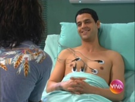 | "Pai Herói" escrito por André Laurentino, Adriana Falcão e João Falcão direção Flávia Lacerda |
18/06/2004 | 07/08/2010 |
| 014 | 2x04 | 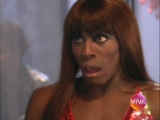 | "A Grande Chance" escrito por Adriana Falcão, Mariana Veríssimo e João Falcão direção Flávia Lacerda participação especial Leo Jaime |
25/06/2004 | 11/09/2010 |
| 015 | 2x05 | 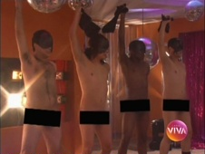 | "Tudo ou Nada" escrito por André Laurentino e João Falcão direção Flávia Lacerda |
02/07/2004 | 18/09/2010 |
| 016 | 2x06 | 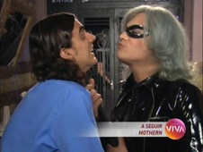 | "Como Dar o Fora" escrito por André Laurentino e Marcelo Rubens Paiva direção Flávia Lacerda |
09/07/2004 | 14/08/2010 |
| 017 | 2x07 | 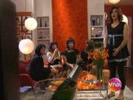 | "Nasce Uma Estrela" escrito por Adriana Falcão, Flávia Lacerda e João Falcão direção Flávia Lacerda participação especial Felipe Koury |
16/07/2004 | 21/08/2010 |
| 018 | 2x08 | 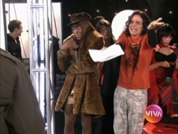 | "O Ciúme" escrito por Adriana Falcão e João Falcão direção Flávia Lacerda participação especial Felipe Koury |
23/07/2004 | 25/09/2010 |
| 019 | 2x09 | 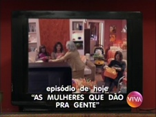 | "As Mulheres Que Dão Pra Gente" escrito por Adriana Falcão, Alexandre Machado e João Falcão direção Flávia Lacerda |
30/07/2004 | 28/08/2010 |
| 020 | 2x10 | 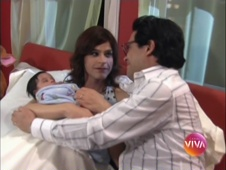 | "Último Capítulo" escrito por Adriana Falcão e João Falcão direção Flávia Lacerda participação especial Derrick Green e Edmilson Barros |
06/08/2004 | 02/10/2010 |